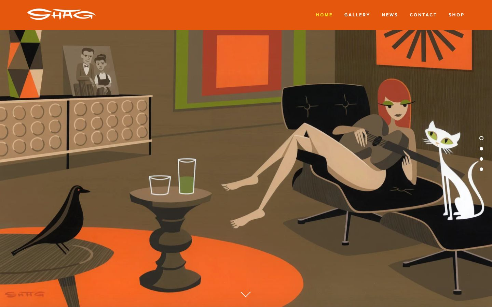

References / Website / 328
Shag website
The artist Shag fills the home page with one of his paintings: a flat, stylized 1950s living room in brown, orange, olive, and black under an orange bar.
- Source
- shag.com
- Creator
- Shag (Josh Agle)
- Styles
- Mid-century modern (agent-proposed, not yet reviewed by a person), Googie (partial fit; agent-proposed, not yet reviewed by a person)
- Moods
- Retro, warm, playful, cocktail
- Evidence
- Captured with
tools/capture.mjs(headless Chrome, 1440 × 900) on 28 September 2026 and inspected. The screenshot shows the first viewport; the measurement covers up to four screens. - Reviewed
- Rights
- Third-party work, stored with credit for commentary. License: unverified. Rights policy
Observed
- A burnt-orange bar at the top holds a white hand-drawn “SHAG” logotype with swept strokes and spaced white capitals for the menu.
- The rest of the viewport is one painting: a room with a brown wood wall, a sideboard with rows of circles, a harlequin-diamond vase, a framed square painting in red, orange, and olive, and an orange starburst panel.
- A stylized red-haired woman with a guitar reclines on a black lounge chair with an ottoman. The figure is nude and drawn with flat planes and no detail.
- A white cat with green eyes sits on the ottoman, a black bird figure stands on a side table, and an orange oval rug lies on the floor.
- All forms are flat color areas with sharp edges and flat cast shadows; there are no gradients.
- Four slider dots sit at the right edge and a down-arrow at the bottom.
Why it belongs
The painting collects the style’s motifs in one place: a starburst, circles, harlequin diamonds, an Eames-type chair, and a flat, geometric figure.
Measured: CSS color metrics see only the orange bar (accent chroma 0.85) and a 0.57 shadow share from the slider controls. The screenshot palette has an accent chroma of 0.73, above the style’s muted range.
Borrow
Use one burnt-orange bar with white spaced capitals above a full-bleed flat illustration.
Draw cast shadows as flat darker shapes, not blurs.
Measured
Machine-extracted by tools/extract-traits.js on . Full measurement.
- Type families
- proxima-nova (100%)
- Type scale ratio
- 1.2
- Median radius
- 0 px
- Mean chroma
- 0.09
- Palette
- #ffffff 70%
- #363636 18%
- #e4570c 11%
- #16161d 1%
- #000000 1%
- #828282 0%
- #ffec1f 0%

